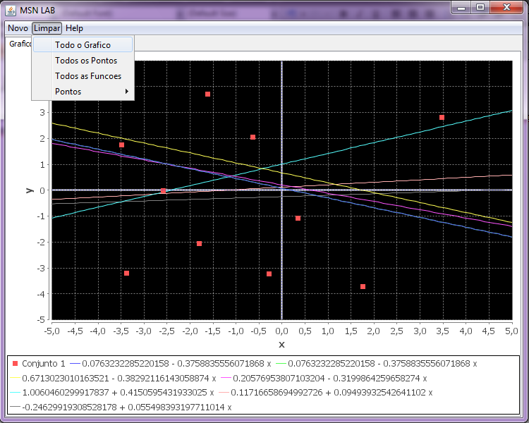
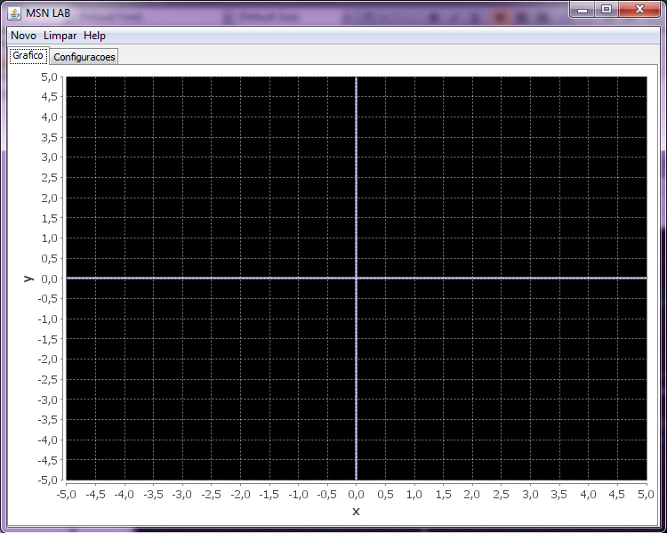

Para limpar todos o elementos do gráfico é necessário apenas clicar no Menu 'Limpar' e logo em seguida em 'Todo Gráfico' como podemos ver no exemplo abaixo.

Logo em seguida podemos ver mudança no gráfico.
